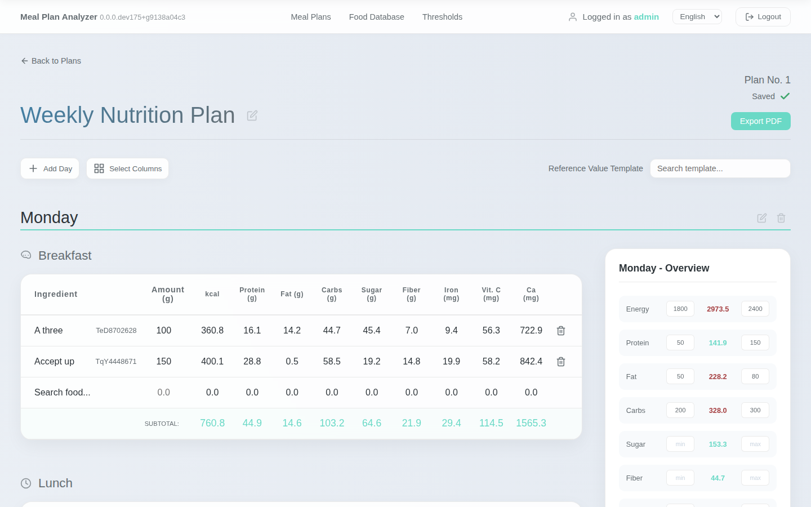
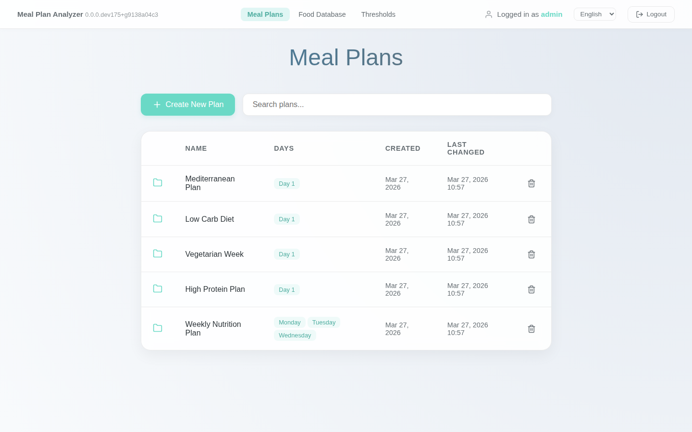
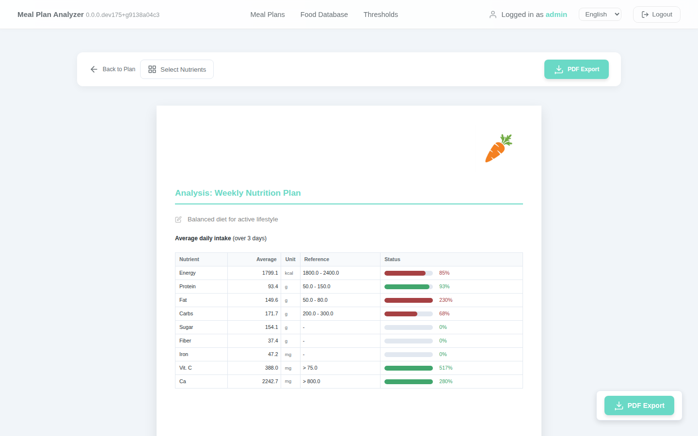
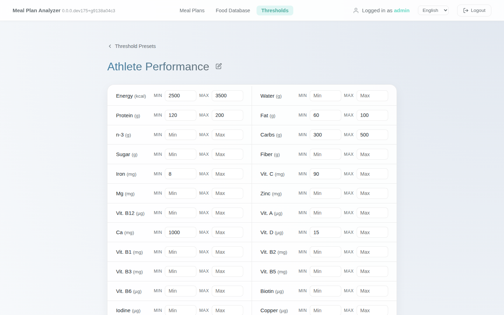

Create personalised meal plans and instantly see the full nutritional picture — powered by the official German food database with over 10,000 food items.
Get started on GitHub See features
Features
From building a shopping list to exporting a week-long plan as a printable PDF.
Organise breakfast, lunch, and dinner across as many days as you need. Reorder and copy days with ease.
Track 26 nutrients per day — energy, water, macros, 9 vitamins, and 7 minerals — all calculated automatically per gram.
Set minimum and maximum targets for any nutrient. Visual indicators flag days where you're falling short or going over.
Search over 10,000 foods from the official German BLS database. Handles German umlauts and custom food aliases.
Generate clean, printable meal plan PDFs complete with nutrient totals, your logo, and custom export names.
Save named threshold presets (e.g. "Athlete", "Senior") and apply them to any plan in one click.
Showcase
A quick look at the core interfaces of Meal Plan Analyzer.
The editor allows you to build multi-day plans effortlessly. Add different meals (Breakfast, Lunch, Dinner), search for any food from our 10,000+ item database, and specify exact gram amounts. Totals and goals are updated in real-time.
Keep track of all your dietary plans from a single, organized dashboard. Quickly copy, delete, or create new plans, and jump straight back into editing your weekly regimen.

Take your meal plans anywhere. The dedicated preview and PDF export features generate a beautiful, printable document containing your daily routines alongside a full nutritional breakdown.

Define named nutrient targets once — for example "Athlete", "Senior", or "Weight Loss" — and apply them to any meal plan in a single click. Each preset sets precise minimum and maximum values across all 24 tracked nutrients.

How it works
No spreadsheets, no manual calculations — just plan, analyse, and export.
Name your meal plan and add as many days as you like.
Find any food by name and set the exact gram amount for each meal.
Define nutrient thresholds so you instantly see what's on track.
Download a polished PDF to share with clients or keep for yourself.
Coverage
Every entry from the German Bundeslebensmittelschlüssel (BLS) database — the gold standard for food composition data.
Open source, self-hostable, and free forever. Take full control of your nutritional data.
View on GitHub Setup guide